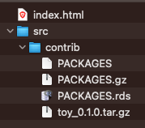
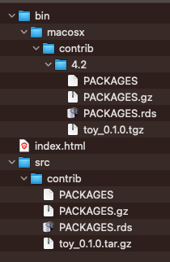
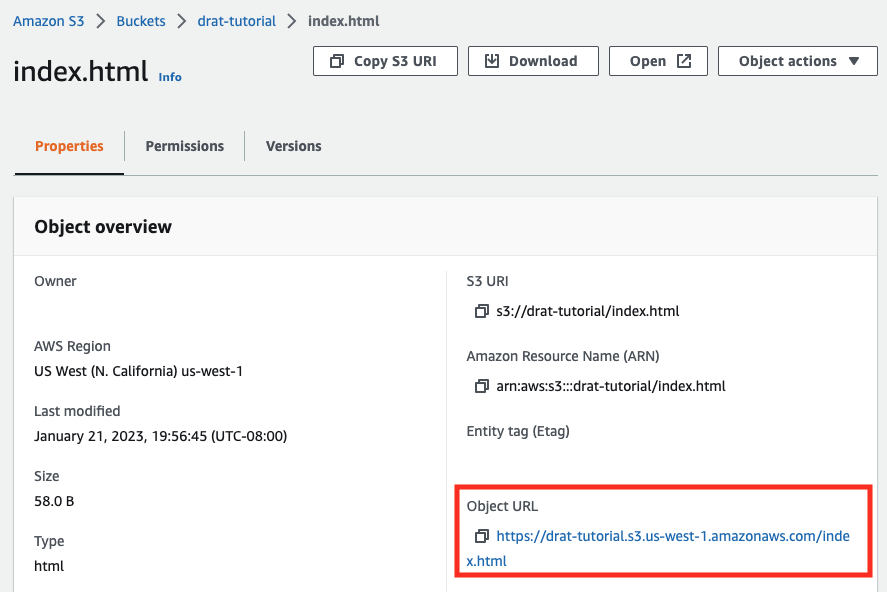

User can then install these packages via the familiar install.packages() command.
Alternatively, authors can share their code through version control systems like github or gitlab, and users can install them with third-party tools e.g. the remotes R package.
But how can you make an R package available privately, e.g. for use within an organization?
In this tutorial, I demonstrate how to set up your own package repository with Dirk Eddelbuettel’sdrat R package, add a package, make R aware of the new repo - and host it remotely on AWS S3.
A package installed from a drat repository will be supported by install.packages() and update.packages(), so the user has easy methods for keeping up-to-date.
The package author has better control over the package version users install, because they actively push specific releases into the repository.
Hadley Wickham and Jenny Bryan have documented how to author, document and build R packages in their freely-available R Packages book. In this walkthrough I am using Mac OS X (v13.1), but you can find instructions to set up Windows or Linux build environments in their R build toolchain chapter.
Bundling an R package’s source code for distribution
First, we need an R package that’s ready for distribution. Here, I am using the toy R package that you can retrieve from github, either via git clone https://github.com/tomsing1/toy or by downloading its source code as a zip file. (Feel free to follow along with another R package instead - as long as you have the source package, the following steps apply.)
Next, we bundle the package into a single compressed file with the .tar.gz file extension. Let’s download the .zip file linked above into the ~/Downloads folder and use the R CMD build command to create a source bundle1:
cd ~/Downloadscurl-s-L-O https://github.com/tomsing1/toy/archive/refs/heads/main.zipunzip-o-q main.ziprm main.zipR CMD build --force toy-main
* checking for file ‘toy-main/DESCRIPTION’ ... OK
* preparing ‘toy’:
* checking DESCRIPTION meta-information ... OK
* checking for LF line-endings in source and make files and shell scripts
* checking for empty or unneeded directories
Omitted ‘LazyData’ from DESCRIPTION
* building ‘toy_0.1.0.tar.gz’
We now have the toy_0.1.0.tar.gz file, ready to be inserted into a new (or existing) drat repository.
Creating a local drat repository
To create a new repository, we start by installing the drat R package itself (if it’s not available on your system already) with the following R commands:
if (!requireNamespace("drat", quietly =TRUE)) {install.packages("drat")}library(drat)
You can specify the path of your drat repository either by setting the dratRepo option 2:
Now, the ~/drat-tutorial folder contains the following files:

drat repository
Accessing the local drat repository
When you prompt your R installation to install or update R packages, it searches repositories specified in the repos option. On my system, only the default repository is set in a fresh R session 5:
If I try to install our example toy R package, I don’t succeed:
install.packages("toy", type ="source")
Installing package into '/Users/sandmann/repositories/blog/renv/library/R-4.3/aarch64-apple-darwin20'
(as 'lib' is unspecified)
Warning: package 'toy' is not available for this version of R
A version of this package for your version of R might be available elsewhere,
see the ideas at
https://cran.r-project.org/doc/manuals/r-patched/R-admin.html#Installing-packages
because R is not aware of our new repository, yet.
Installing from source
At this point, we must add the type="source" argument, because we have only added the source bundle to the repository. We will add a compiled version in a moment - read on!
To test our local repository, we add its path to the list of known repositories.
By default, drat’s addRepo() command assumes that repositories are hosted on github-pages. Because we want to access a repo via the filesystem (either locally or on a network drive), we need to explicitly add the file:/ prefix - and use the absolute file path (e.g. returned by path.expand("~/drat-tutorial")) to specify its location.
In this case, concatenating file:/ with /Users/sandmann/drat-tutorial produces the final file://Users/sandmann/drat-tutorial location (note the double forward slashes).
Now, we can install it with the usual install.packages() command 6:
install.packages("toy", type ="source")
Installing package into '/Users/sandmann/repositories/blog/renv/library/R-4.3/aarch64-apple-darwin20'
(as 'lib' is unspecified)
Great! We have successfully installed our toy R package from our brand new repository. Now it is time to make it available to other users as well.
Building binary packages
Windows and Mac users who install packages from CRAN or any user installing files from the Posit Public Package Manager (PPPM) will usually receive a binary package. CRAN accepts package bundles and creates the platform-specific binary file for distribution. To offer the same service to users of our drat repository, we need to compile the binary package ourselves.
Here, I create the Mac OS binary package from the bundle we obtained above by executing the following command on my Mac OS operating system:
cd ~/DownloadsR CMD INSTALL --build toy_0.1.0.tar.gz
* installing to library ‘/Users/sandmann/repositories/blog/renv/library/R-4.3/aarch64-apple-darwin20’
* installing *source* package ‘toy’ ...
** using staged installation
** R
** byte-compile and prepare package for lazy loading
** help
*** installing help indices
** building package indices
** testing if installed package can be loaded from temporary location
** testing if installed package can be loaded from final location
** testing if installed package keeps a record of temporary installation path
* creating tarball
packaged installation of ‘toy’ as ‘toy_0.1.0.tgz’
* DONE (toy)
This command will first install the package into my default R library, and then create the binary toy_0.1.0.tgz file.
Next, we add it to our local drat repository (note the .tgz file suffix).
Now, the ~/drat-tutorial folder contains a new subdirectory (bin) with the binary files for Mac OS X:

drat repository
At long last, now we can omit the type="source" argument from calls to install.packages():
install.packages("toy")
renv was unable to query available packages from the following repositories:
- # file://Users/sandmann/drat-tutorial/bin/macosx/big-sur-arm64/contrib/4.3 --------
error downloading 'file://Users/sandmann/drat-tutorial/bin/macosx/big-sur-arm64/contrib/4.3/PACKAGES.rds' [curl: (3) URL rejected: Bad file:// URL]
error downloading 'file://Users/sandmann/drat-tutorial/bin/macosx/big-sur-arm64/contrib/4.3/PACKAGES.gz' [curl: (3) URL rejected: Bad file:// URL]
error downloading 'file://Users/sandmann/drat-tutorial/bin/macosx/big-sur-arm64/contrib/4.3/PACKAGES' [curl: (3) URL rejected: Bad file:// URL]
# Downloading packages -------------------------------------------------------
- Downloading toy from LocalRepo ... OK [1.5 Kb]
Successfully downloaded 1 package in 3.5 seconds.
The following package(s) will be installed:
- toy [0.1.0]
These packages will be installed into "~/repositories/blog/renv/library/R-4.3/aarch64-apple-darwin20".
# Installing packages --------------------------------------------------------
- Installing toy ... OK [built from source and cached in 1.1s]
Successfully installed 1 package in 1.1 seconds.
Hosting your drat repository on AWS S3
drat repositories can be hosted in any location
that you can write files to and
that can serve files via http
But unless you placed your drat repository into a network drive that is accessible by multiple users, it is currently only useful to yourself.
Sharing repository over a local network
If you chose a network drive as the location of your drat repository, then other user can benefit from it right - as long as they can read from the shared directory. As before, the absolute path must be prefixed with the file:/ prefix. For example, a repository that is available on the user’s systems at /nfs/groups/groupABC/R/drat would be added to the list of R repositories via drat::addRepo("workgroup", "file://nfs/groups/groupABC/R/drat").
Here, we are interested in hosting a repository privately instead, e.g. in a location that is only accessible from within our own organization:
If you already have access to a private server that serves files to your users (e.g. via HTTP), then you can simply copy your repository there.
If your organization uses Amazon Web Services (AWS), you can also use an S3 bucket to host your repository and take advantage of the access controls set by your organization.
Public repositories in S3 buckets
Although this use case focuses on hosting private repositories, you can of course also make repositories in S3 buckets publicly available. Alas, data storage in S3 buckets incurs cost, while other options (e.g. github-pages, CRAN, Bioconductor, etc) are free, so this might not be your preferred option.
We will assume that you have write access to an S3 bucket that is configured to serve static files via HTTP. (For a brief outline of the necessary steps, please see the appendix ). Here, I am using a bucket called drat-tutorial - but you should create / access your own bucket to follow along.
Warning
AWS S3 buckets can be configured to either be visible publicly, or access can be restricted to specific IP addresses, security groups or other AWS resources. Please make sure you have configured your bucket in a way that suits your needs.
To share our repository, we must first copy its folder to the S3 bucket, either via the AWS Console or (more conveniently) with the aws command line interface7. (If you are adventurous, you can also mount an S3 bucket as a filey system with goofys).
We can use the aws s3 ls command to confirm the upload:
aws s3 ls s3://drat-tutorial/repo/
Note
Whenever we make changes to our local repository, e.g. after adding new packages or package versions, we have to rerun the aws s3 sync command to copy the new files to the S3 bucket.
Now that the files are in place, we can add our remote repository to the the list of R repositories in our R session. First, we remove the LocalRepo repository that we had added earlier, which points to the folder on our local filesystem.
Let’s try to install the toy package from our S3 drat repository:
install.packages("toy")
Success! R has successfully connected to the remote repository and installed the (binary) R package.
Conclusions
The drat R package makes it extremely simple to create a CRAN-like repository.
The static files can be served via HTTP, making it straightforward to host the repository e.g. in an AWS S3 bucket with a restrictive access policy.
Appendix
Creating and configuring an S3 bucket to host static files
The following steps briefly outline how to create and configure an S3 bucket to act as a static web server via the AWS web interface (e.g. the AWS Console). For more details, please read the AWS S3 documentation and / or consult your local AWS expert.
Warning
Storing files on AWS S3 is not free. In this tutorial, we only upload a limited number of small files, but please don’t forget to purge them from your AWS account afterward.
Create a new bucket (skip if you already have one)
Make sure you create the bucket in the region that works best for your organization (e.g. us-west-1 if you want to host your files in California).
You do not need to enable public access, stick to the defaults for your organization.
For example, the following policy grants read access to all files in the s3://drat-tutorial/ bucket to requests originating (only) from the 192.0.2.0 IP address. (Your own configuration will be different, of course.)
Alternatively, you can also create the bundle from within R using the devtools::build() command.↩︎
You might want to add this option to your .Rprofile file.↩︎
Of course, you can place it anywhere you like, including e.g. network drives, as long as you can write to the directory. If you are using Windows, please remember to use backward instead of forward slashes in your paths.↩︎
In this tutorial, I use the :: notation to highlight which package a function originates from. Because we attached the package with the library(drat) command before, the drat:: prefix could be omitted.↩︎
In this tutorial, I use the :: notation to highlight in which package functions originate from. Because we attached the package with the library(drat) command before, the drat:: prefix could be omitted.↩︎
If you use Bioconductor, the BiocManager::repositories() specifies additional repositories that host its annotation and software packages.↩︎
You can look up the URL for your bucket in the AWS S3 console: ↩︎
Source Code
---title: "Distributing R packages with a drat repository hosted on AWS S3"author: "Thomas Sandmann"date: "2023-01-21"freeze: truecategories: [R, AWS, TIL]editor: markdown: wrap: 72format: html: toc: true toc-depth: 4 code-tools: source: true toggle: false caption: noneeditor_options: chunk_output_type: console---```{bash}#| echo: false#| results: hide#| eval: falseaws s3 rm --recursive s3://drat-tutorial/``````{bash}#| echo: false#| results: hiderm-rf ~/drat-tutorial```## tl;drToday I learned how to- Build an R package into source and binary bundles for distribution.- Create a local drat repository.- Add an R package to the repository and install it from there.- Host the repository remotely in an AWS S3 bucket.Many thanks to [Dirk Eddelbuettel](https://dirk.eddelbuettel.com/) for creatingand documenting the [drat R package](https://cran.r-project.org/package=drat)!(As always, any mistakes are my own.)### MotivationThere are multiple ways for developers to share R packages publicly,e.g.- Submit them to the [The Comprehensive R Archive Network (CRAN)](https://cran.r-project.org/),- Contribute them to the [Bioconductor](https://www.bioconductor.org/) project,- Publish them via [rOpenSci's R-universe](https://ropensci.org/r-universe/)User can then install these packages via the familiar `install.packages()`command.Alternatively, authors can share their code through version control systemslike [github](https://github.com/) or [gitlab](https://about.gitlab.com/), and users can install them with third-party tools e.g.[the remotes R package](https://cran.r-project.org/package=remotes).But **how can you make an R package available privately**, e.g. for usewithin an organization? In this tutorial, I demonstrate how to set up your own package repository with[Dirk Eddelbuettel's](https://dirk.eddelbuettel.com/)[drat R package](https://cran.r-project.org/package=drat),add a package, make R aware of the new repo - and host it remotely on AWS S3.### Why drat?Dirk Eddelbuettel [highlights two mainadvantages:](https://eddelbuettel.github.io/drat/vignettes/dratfaq/)- A package installed from a drat repository will be supported by`install.packages()` and `update.packages()`, so the user has easy methods for keeping up-to-date.- The package author has better control over the package version users install, because they actively push specific releases into the repository.[Please see Dirk's DratFAQ's](https://eddelbuettel.github.io/drat/vignettes/dratfaq/) foradditional points, e.g. ['Why could install_github bewrong?'](https://eddelbuettel.github.io/drat/vignettes/dratfaq/#why-could-install_github-be-wrong)### PrequisitesHadley Wickham and Jenny Bryan have documented how to author, documentand build R packages in their freely-available [R Packagesbook](https://r-pkgs.org/). In this walkthrough I am using Mac OS X(v13.1), but you can find instructions to set up Windows or Linux buildenvironments in their [R buildtoolchain](https://r-pkgs.org/setup.html#setup-tools) chapter.### Bundling an R package's source code for distributionFirst, we need an R package that's ready for distribution. Here, I am using the`toy` R package [that you can retrieve from github](https://github.com/tomsing1/toy), either via`git clone https://github.com/tomsing1/toy` or by downloading its sourcecode as a [zip file](https://github.com/tomsing1/toy/archive/refs/heads/main.zip).(Feel free to follow along with another R package instead - as long asyou have the [source package](https://r-pkgs.org/structure.html#sec-source-package),the following steps apply.)Next, we [bundle the package](https://r-pkgs.org/structure.html#sec-bundled-package)into a single compressed file with the `.tar.gz` file extension. Let'sdownload the `.zip` file linked above into the `~/Downloads` folder and use the`R CMD build` command to create a _source bundle_ [^1]:[^1]: Alternatively, you can also create the bundle from within R using the[devtools::build()](https://devtools.r-lib.org/reference/build.html) command.```{bash}cd ~/Downloadscurl-s-L-O https://github.com/tomsing1/toy/archive/refs/heads/main.zipunzip-o-q main.ziprm main.zipR CMD build --force toy-main```We now have the `toy_0.1.0.tar.gz` file, ready to be inserted into a new(or existing) drat repository.### Creating a local drat repositoryTo create a new repository, we start by installing the [drat Rpackage](https://cran.r-project.org/package=drat) itself (if it's notavailable on your system already) with the following R commands:```{r}if (!requireNamespace("drat", quietly =TRUE)) {install.packages("drat")}library(drat)```You can specify the path of your drat repository either by setting the`dratRepo` option [^2]:[^2]: You might want to add this option to your[.Rprofile](https://rstats.wtf/r-startup.html#rprofile) file.```{r}options(dratRepo ="~/drat-tutorial")getOption("dratRepo")```or by providing it as an argument to the `drat::insertPackage()`function (see below).Let's create a new drat repository in our home directory [^3], andpopulate it with a minimal `index.html` file (to avoid`HTTP 404 Not Found` errors later).[^3]: Of course, you can place it anywhere you like, including e.g. network drives, as long as you can write to the directory. If you are using Windows, please remember to use backward instead of forward slashes in your paths.```{r}dir.create("~/drat-tutorial", showWarnings =FALSE)writeLines(text ="<!doctype html><title>My awesome drat repository!</title>",con ="~/drat-tutorial/index.html")```Now we are ready to insert the `toy` package bundle into the repositorywith drat's `insertPackage()` command [^4]:[^4]: In this tutorial, I use the `::` notation to highlight which package a function originates from. Because we attached the package with the `library(drat)` command before, the `drat::` prefix could be omitted.```{r}drat::insertPackage(file ="~/Downloads/toy_0.1.0.tar.gz",repodir ="~/drat-tutorial")```Now, the `~/drat-tutorial` folder contains the following files:### Accessing the local drat repositoryWhen you prompt your R installation to install or update R packages, itsearches repositories specified in the `repos` option. On my system,only the default repository is set in a fresh R session [^5]:[^5]: In this tutorial, I use the `::` notation to highlight in which package functions originate from. Because we attached the package with the `library(drat)` command before, the `drat::` prefix could be omitted.```{r}getOption("repos")```If I try to install our example `toy` R package, I don't succeed:```{r}install.packages("toy", type ="source")```because R is not aware of our new repository, yet.::: callout-note### Installing from sourceAt this point, we must add the `type="source"` argument, because we haveonly added the *source* bundle to the repository. We will add a compiledversion in a moment - read on!:::To test our local repository, we add its path to the list of knownrepositories.```{r}drat::addRepo("LocalRepo", "file://Users/sandmann/drat-tutorial")getOption("repos")```::: callout-important### Specifying file:// pathsBy default, drat's `addRepo()` command assumes that repositories arehosted on [github-pages](https://pages.github.com/). Because we want toaccess a repo via the filesystem (either locally or on a network drive),we need to explicitly add the `file:/` prefix - and use the absolutefile path (e.g. returned by `path.expand("~/drat-tutorial")`) to specify itslocation.In this case, concatenating `file:/` with `/Users/sandmann/drat-tutorial`produces the final `file://Users/sandmann/drat-tutorial` location (note thedouble forward slashes).:::Now, we can install it with the usual `install.packages()` command [^6]:[^6]: If you use Bioconductor, the `BiocManager::repositories()` specifies additional repositories that host its annotation and software packages.```{r}install.packages("toy", type ="source")```Great! We have successfully installed our `toy` R package from our brandnew repository. Now it is time to make it available to other users aswell.### Building binary packagesWindows and Mac users who install packages from [CRAN](https://cran.r-project.org/)or any user installing files from the[Posit Public Package Manager (PPPM)](https://packagemanager.rstudio.com/client/#/)will usually receive [a binary package](https://r-pkgs.org/Structure.html#sec-structure-binary).CRAN accepts package bundles and creates the platform-specific binary file fordistribution. To offer the same service to users of our drat repository, weneed to compile the binary package ourselves.Here, I create the Mac OS binary package from the bundle we obtained aboveby executing the following command on my Mac OS operating system:```{bash}cd ~/DownloadsR CMD INSTALL --build toy_0.1.0.tar.gz```This command will first install the package into my default R library, and thencreate the binary `toy_0.1.0.tgz` file.Next, we add it to our local drat repository (note the `.tgz` file suffix).```{r}drat::insertPackage(file ="~/Downloads/toy_0.1.0.tgz",repodir ="~/drat-tutorial")```Now, the `~/drat-tutorial` folder contains a new subdirectory (`bin`) with thebinary files for Mac OS X:At long last, now we can omit the `type="source"` argument from calls to `install.packages()`:```{r}install.packages("toy")```## Hosting your drat repository on AWS S3drat repositories can be hosted in any location1. that you can write files to and2. that can serve files via httpBut unless you placed your drat repository into a network drive that isaccessible by multiple users, it is currently only useful to yourself.::: {.callout-note collapse="true"}### Sharing repository over a local networkIf you chose a network drive as the location of your drat repository,then other user can benefit from it right - as long as they can read from theshared directory. As before, the absolute path must be prefixed with the `file:/` prefix. For example, a repository that is available on *the user's* systems at `/nfs/groups/groupABC/R/drat` would be added to the list of Rrepositories via `drat::addRepo("workgroup", "file://nfs/groups/groupABC/R/drat")`.:::The [dratdocumentation](https://eddelbuettel.github.io/drat/vignettes/dratforusers/#case-1-using-github)illustrates how you can use [git](https://git-scm.com/) and [githubpages](https://pages.github.com/) to make your repository *publicly*available.Here, we are interested in hosting a repository *privately* instead,e.g. in a location that is only accessible from within our ownorganization: - If you already have access to a private server that serves filesto your users (e.g. via HTTP), then you can simply copy your repository there.- If your organization uses Amazon Web Services (AWS), you can also use an[S3 bucket to host your repository](https://docs.aws.amazon.com/AmazonS3/latest/userguide/WebsiteHosting.html)and take advantage of the access controls set by your organization.::: {.callout-note collapse="true"}### Public repositories in S3 bucketsAlthough this use case focuses on hosting private repositories, you can of course also make repositories in S3 buckets publicly available. Alas,data storage in S3 buckets incurs cost, while other options (e.g. github-pages,CRAN, Bioconductor, etc) are free, so this might not be your preferred option.:::We will assume that you have write access to an S3 bucket that isconfigured to serve static files via HTTP. (For a brief outline of thenecessary steps, please [see the appendix]((#creating-and-configuring-an-s3-bucket-to-host-static-files))).Here, I am using a bucket called `drat-tutorial` - but you should create / access your own bucket to follow along.::: callout-warningAWS S3 buckets can be configured to either be visible publicly, oraccess can be restricted to specific IP addresses, security groups orother AWS resources. Please make sure you have configured your bucket ina way that suits your needs.S3 buckets do *not* support the [HTTPSprotocol](https://en.wikipedia.org/wiki/HTTPS). If you require anencrypted file transfer, you might need a [differentsolution](https://aws.amazon.com/premiumsupport/knowledge-center/cloudfront-https-requests-s3/).:::To share our repository, we must first copy its folder to the S3 bucket, eithervia the AWS Console or (more conveniently) with the[aws command line interface](https://aws.amazon.com/cli/)[^7]. (If you are adventurous, you can also mount an S3 bucket as a _filey_ system with[goofys](https://github.com/kahing/goofys)).[^7]: [Installation instructions](https://docs.aws.amazon.com/cli/latest/userguide/getting-started-install.html).Assuming you have set [the necessary AWS credentials](https://docs.aws.amazon.com/cli/latest/userguide/cli-configure-files.html),the following `aws s3 sync` command copies our repository to the `repo` folderwithin `drat-tutorial` bucket that I [created in the `us-west-1` AWS region](#creating-and-configuring-an-s3-bucket-to-host-static-files).```{bash}#| results: hide#| eval: falseaws s3 sync ~/drat-tutorial s3://drat-tutorial/repo```We can use the `aws s3 ls` command to confirm the upload:```{bash}#| eval: falseaws s3 ls s3://drat-tutorial/repo/```::: {.callout-note}Whenever we make changes to our local repository, e.g. after adding new packagesor package versions, we have to rerun the `aws s3 sync` command to copy the new files to the S3 bucket.:::Now that the files are in place, we can add our remote repository to the thelist of R repositories in our R session. First, we remove the `LocalRepo`repository that we had added earlier, which points to the folder on ourlocal filesystem.```{r}options(repos =getOption("repos")[setdiff(names(getOption("repos")), "LocalRepo")])```The we add the remote repository instead, by pointing to the URL of theS3 bucket [^8].[^8]: You can look up the URL for your bucket in the AWS S3 console: ```{r}#| eval: falsedrat::addRepo("S3repo", "http://drat-tutorial.s3.us-west-1.amazonaws.com/repo/")getOption("repos")```Let's try to install the `toy` package from our S3 drat repository:```{r}#| eval: falseinstall.packages("toy")```Success! R has successfully connected to the remote repository and installedthe (binary) R package.## Conclusions- The `drat` R package makes it extremely simple to create a CRAN-like repository. - The static files can be served via HTTP, making it straightforward to host the repository e.g. in an AWS S3 bucket with a restrictive access policy.## Appendix### Creating and configuring an S3 bucket to host static filesThe following steps briefly outline how to create and configure an S3bucket to act as a static web server via the AWS web interface (e.g. theAWS Console). For more details, please read the [AWS S3documentation](https://docs.aws.amazon.com/AmazonS3/latest/userguide/WebsiteHosting.html)and / or consult your local AWS expert.::: {.callout-warning}Storing files on AWS S3 is not free. In this tutorial, we only upload a limitednumber of small files, but please don't forget to purge them from your AWSaccount afterward. :::1. Create a new bucket (skip if you already have one)- Make sure you create the bucket in the `region` that works best for your organization (e.g. `us-west-1` if you want to host your files in California).- You do *not* need to enable `public access`, stick to the defaults for your organization.2. Next, navigate to your bucket's properties, scroll all the way to the bottom of the page and [enable Static website hosting](https://docs.aws.amazon.com/AmazonS3/latest/userguide/HostingWebsiteOnS3Setup.html#step2-create-bucket-config-as-website). (Typically) specify `index.html` as the`Index document`.3. Under the `Permissions` tab, add a bucket policy that makes your content available _within_ your organization ::: {.callout-warning} These settings determine who can access your files. Proceed with caution to [avoid inadvertently exposing your data to the world!](https://www.trendmicro.com/vinfo/pl/security/news/virtualization-and-cloud/data-on-123-million-us-households-exposed-due-to-misconfigured-aws-s3-bucket) ::: For example, the following policy grants read access to all files in the`s3://drat-tutorial/` bucket to requests originating (only) from the `192.0.2.0` IP address. (Your own configuration will be different, of course.)```json{"Version":"2012-10-17","Statement":[{"Sid":"PublicReadGetObject","Effect":"Allow","Principal":"*","Action":["s3:GetObject"],"Resource":["arn:aws:s3:::drat-tutorial/*"],"Condition":{"IpAddress":{"aws:SourceIp":"192.0.2.0/32"}}}]}```